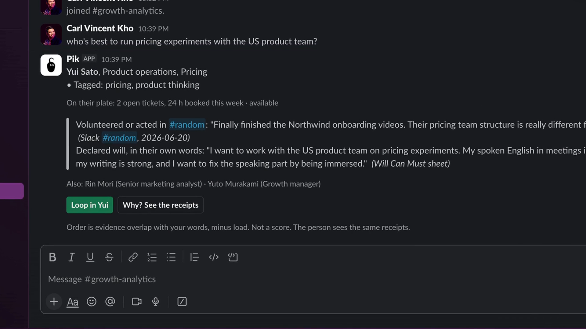
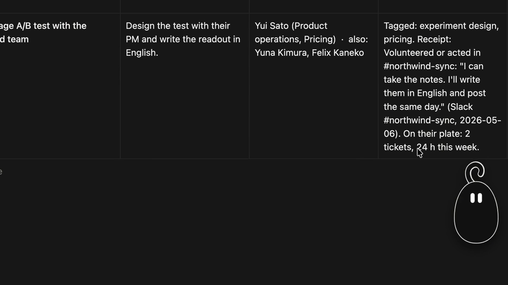

03 Inspiration
The evidence already exists. What was missing is a page the employee can see too.


Observed
“I create a presentation of all the things that even my boss didn’t see.”
a product leader, 30 to 40 reports
Revealed
“In theory we can use it. Accountability, transparency.”
a head of HR
Unlock
“They want to maintain their culture, they want to stick with their own rules of evaluation.”
a former leader of 150 engineers
Interviews at the venue, Sep 25 to 27, 2026, roles only · the Japanese original of the second quote is in the notes
04 Solution overview
Pik finds who is best for each task, from the work your company’s tools already hold.

Who it is for
Anyone forming a task force: team leads, HR, and any colleague who needs to loop someone in.
What changes
Ask once, where you work. No directory search.
Teams form per task, then dissolve.
Work follows capacity, not the usual few.
Matched on what people did, want, and how they work together.
Demo, 90 s: deck/pik_demo_90s.mp4 · Meet listener on Gemini 3.8 Live, Vertex AI · the company on screen is fictional
A4 What is real in the demo
The company is fictional. The pipeline and the surfaces run in the repo.
Fixtures
Kaede Works, 200 generated people: 34 Slack messages, 5 documents, 3 sheets, 3 notes, 5 sessions, 2 DMs never read.
Running
The Gemini 3.8 Live listener, Gemini 3.8 Flash extraction, the Slack bot, the Notion watcher, the page.
Meet
Slack
Notionprototype/data/manifest.json · the memo is templated · connectors proposed; the demo reads JSON shaped like exports